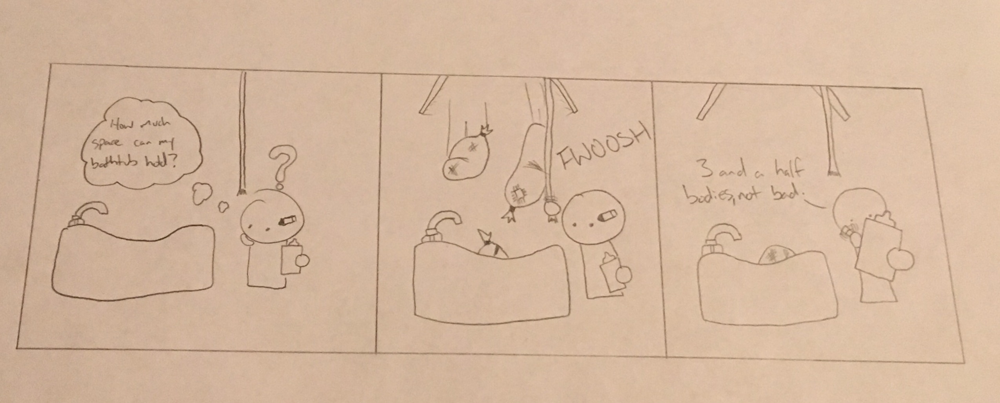

Problem: I need to know how much area my bathtub can hold because I need to hide all of my abysmal grades.
How to figure out the amount of bodies you can hide in the bathtub.
If you are able to read, then you should be able to read how I solved this incredibly difficult problem.
For starters, I know that my bathtub is in an oval shape, but since I'm too lazy to learn more stuff, I'm going to pretend that the bathtub is an irregular octagon. Although it is not an exact calculation, it is balanced from the slope at the bottom of the bathtub.
Now that I have an octagon, I can split the bathtub up into 2 trapezoids and a single huge rectangle.
From here, I just solve for the areas for each of the smaller shapes and combine it to get the approximate area for my bathtub.
And according to this original piece of source, my bathtub has an appoximate liquid volume of 32860 Liters.
Did you know that you could pour 16430 large bottles of Sprite into the bathtub!
Fun fact, the bathtub has gained volume over time as the bathtub's materials have been weathered and eroded away.
Since the bathtub isn't made out of metal, you don't really have to account for thermal expansion of the bathtub!
The bathtub is sloped in order for the user to not kill themself in a dissapointing way.
There is no pre-installed rubber mats or anything of the like on the bathtub floor because it saves money. It also makes my life easier when wanting to calculate the size of the bathtub.